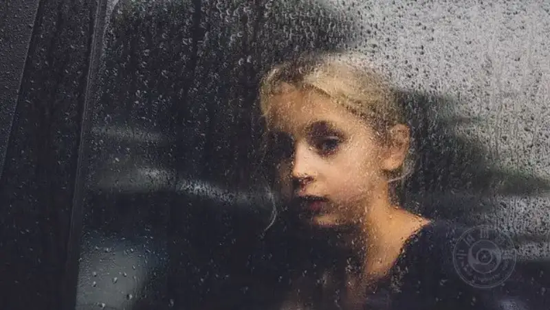
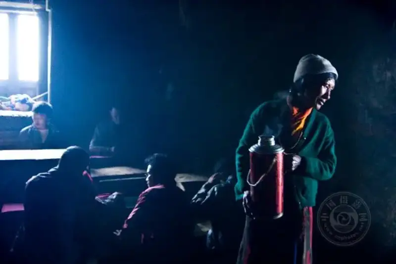
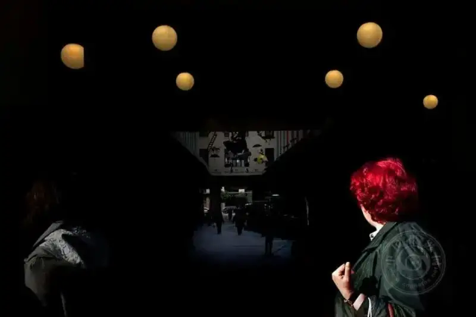
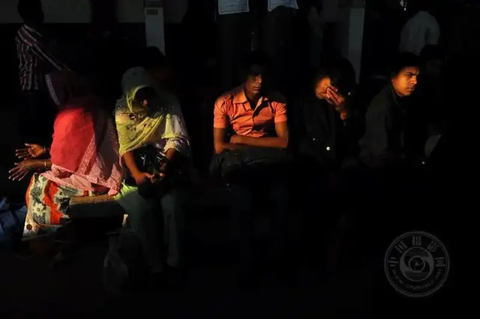
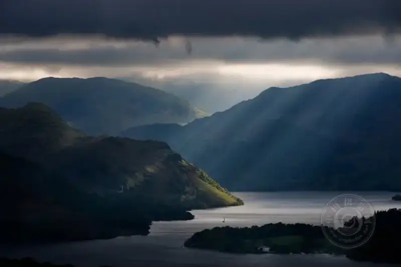
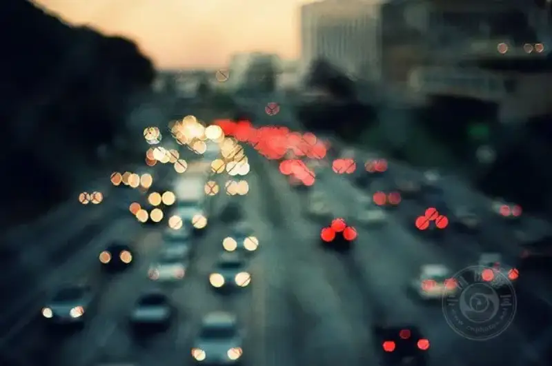

Night falls, and the lights are not yet on.
You raise your camera. The viewfinder looks dark. You turn the focus ring again and again. The moment you press the shutter, you are not sure. Every photographer knows that feeling well. You see something beautiful, but you cannot keep it.
Do not rush to push the ISO to its limit. Do not blame your gear for not being good enough.
Low light is not the enemy of photography. It just tests your understanding with the camera in a different way. In this article, I do not write a manual or pile up specs. I share four principles I have worked out in the dark. They are about light, blur, focus, and how you think about the camera in your hands.

©Carolyn
1. You do not need much light, only enough
A camera never captures light by brute force. It is more like a craftsman who knows how to balance. Between shutter speed, aperture, and ISO, there is always a trade-off.
In low light, we do not force the image brighter. We learn to live with the dark.
Try letting the image underexpose a little. Then the shutter can be faster, and the panic of camera shake fades away. Open the aperture to its widest, and let every faint ray of light flood into the sensor.
The underexposed histogram is not complete, and the midtones are quietly missing. But so what? A good low-light image never needs to cover everything. It only needs to hold the feeling in the bright parts and hide the imagination in the dark. The quiet space between highlight and shadow is where the story really happens.

©Mitchell Kanashkevich
2. Blur is another brushstroke of light
If the shutter slows down, do not rush to call the photo a failure.
The light trails you did not plan, and the outlines blurred by a shake, sometimes move us more than a sharp image. Photography is not only a record. It can also be the projection of feeling.
We often chase sharpness in the light, but we meet softness in the dark.
When you walk from light into dimness, your eyes cannot adjust in time, and the camera cannot keep up. But trust this: that one moment of loss of control may be the most honest part of the image. Blur is not scary. What is scary is that you dare not blur. If you accept it calmly, it becomes the most special brushstroke in your hand.
3. Focus is a patient practice
Autofocus easily gets lost in the dark. Whether it has nine points or seventeen points, it cannot see the feeling that you see.
So you go back to the most basic way: with your eyes, your hands, and a calm mind.
Use manual focus with magnified live view. Turn the focus ring slowly until the edges of the image move from blur to sharp. That moment is like finding a door in the dark. You push it open gently, light pours in, and the world takes shape again.
At first you will surely make mistakes. The focus is off again and again, and your rhythm breaks. But do not rush. This cannot be rushed. Take more shots, adjust more times, and let your hands remember the spot for you. What we call precision is just one right match after countless attempts.

©Lukas Vasilikos

©Michał Pachniewski
4. Read your lens, and read the light
Every camera has its own temper, and every lens has its own preference.
Spend some quiet time. Shoot the same thing at different ISO values, magnify, and compare. Keep going until you find the line where image quality and sensitivity meet. Go past it and the image breaks down. Stay below it and the light and shadow hold.
In low light, a zoom lens is certainly convenient. But when it comes to purity, I always prefer a prime lens.
It is lighter and simpler, and its aperture is wider. No complex glass elements eat the light, and no zooming brings the small shakes it tends to cause. Move close to your subject and press the shutter quietly. You will find that the details in the dark are far richer than you imagined.
Choosing a lens that fits you is like finding a companion who understands you. It does not speak, but it helps you keep many of the dusks and late nights that would otherwise fade away.

©Tommy Martin

©Anthony Samaniego
In closing
Low-light photography cannot be rushed, and it cannot be avoided. But if you are willing to be patient and look into the dark a little longer, you will find that the dark is never empty. It has depth, it has warmth, and it holds light that goes unseen.
I hope these four small ideas make you feel more sure the next time you step into the night.
If you have a story of meeting the dark, feel free to tell it to me in the comments. A good photo deserves to be seen. Good experience deserves to be shared.